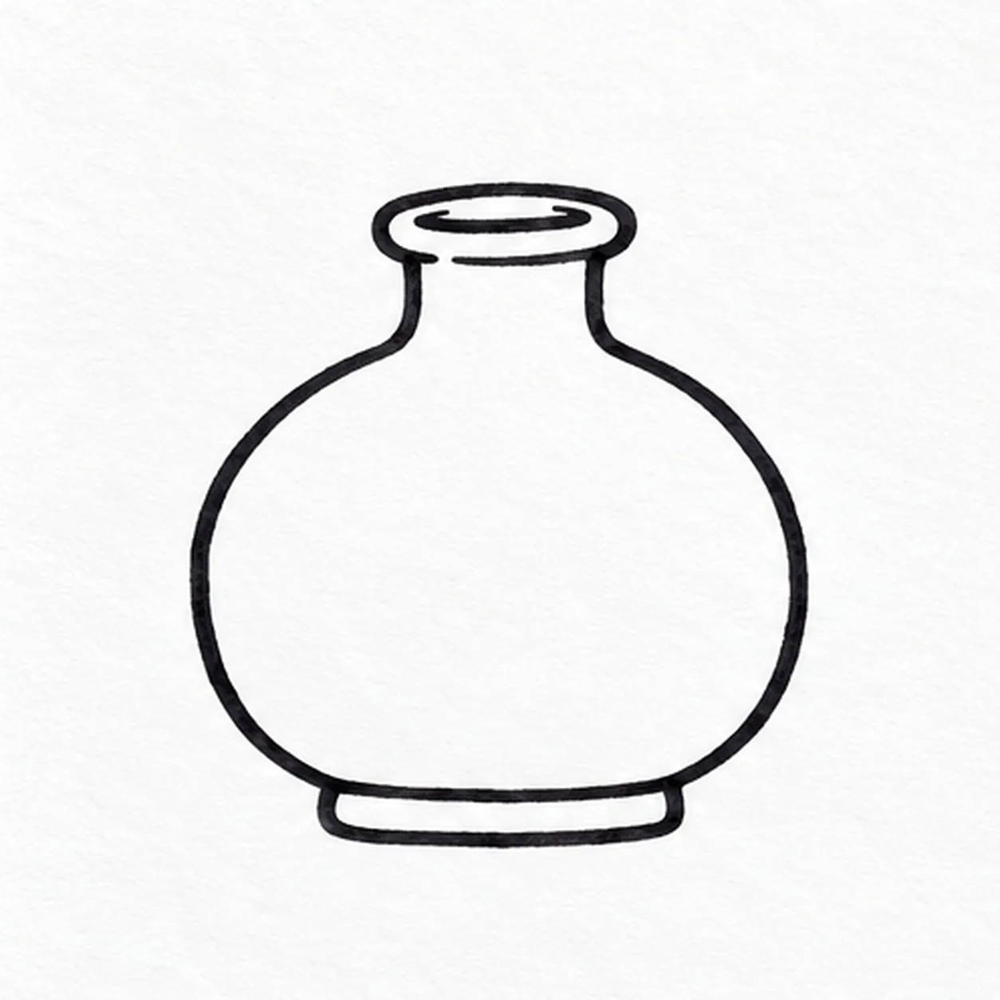
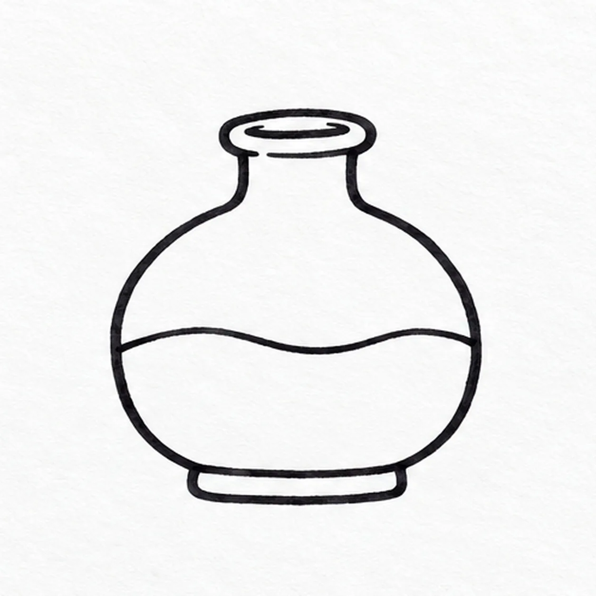
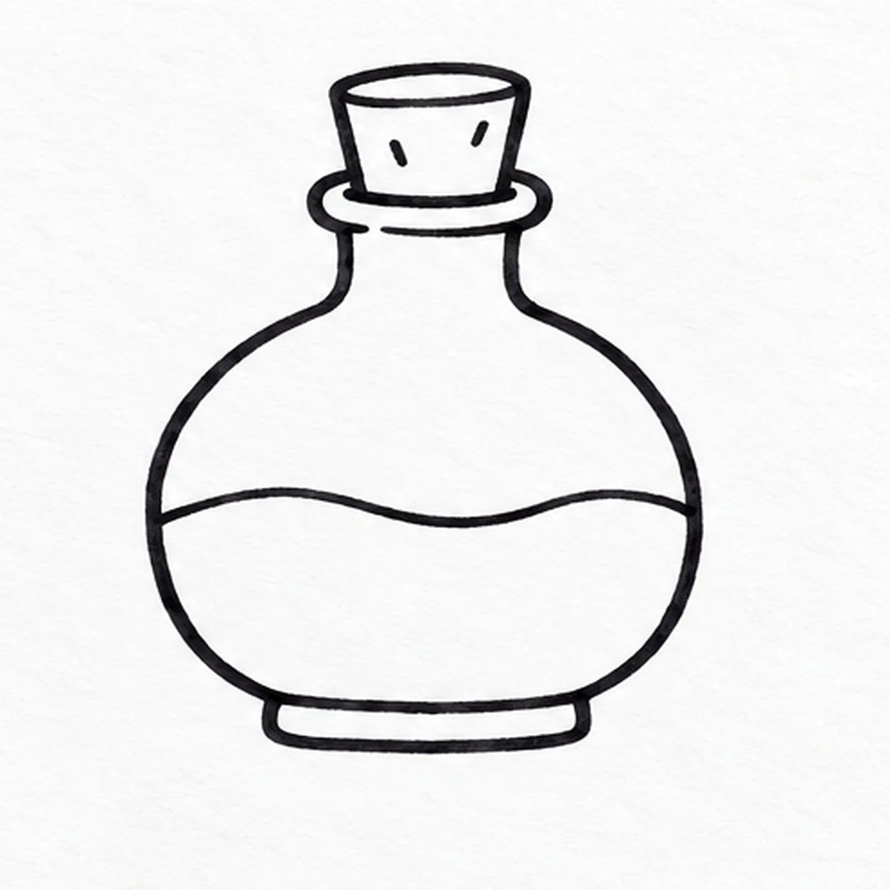
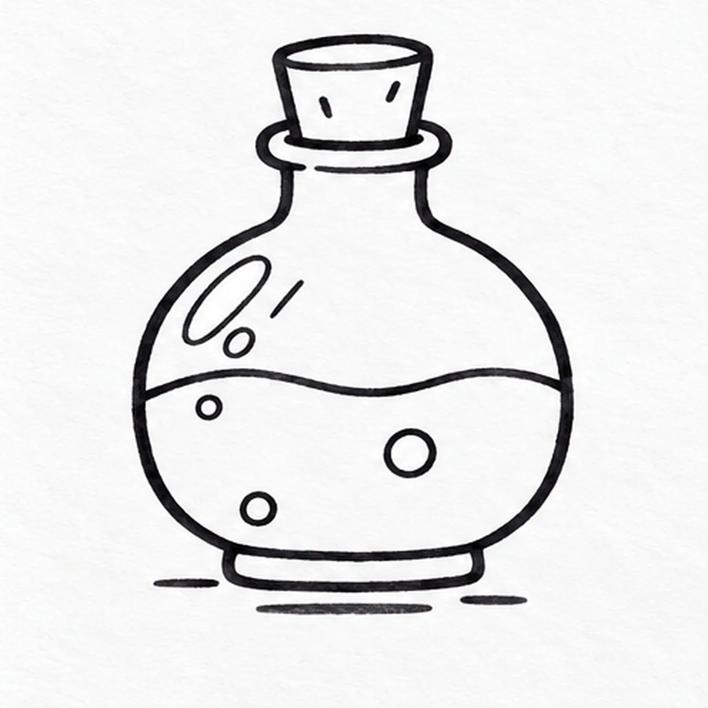

Felt-tip marker mode
Let's draw a potion bottle
Treat this as one playful practice round: sketch the idea loosely, simplify the shapes, then commit with confident marker outlines and bright fills.
-
01

Outline the little flask
With black felt tip, draw one rounded flask with broad shoulders and a flat lower edge. Add a short raised foot beneath it, then pull two narrow neck sides up and close their top with an oval mouth.
Marker tip: Keep the neck narrow and leave the bottle middle empty for a clear liquid line.
-
02

Set the liquid level
Inside the flask, draw one wavy liquid surface across its lower middle from the left inner wall to the right inner wall; keep the body and neck unchanged.
Marker tip: Let the surface wave gently; keep the two ends touching the inner wall.
-
03

Cork the neck
At the oval mouth, draw a short tapered cork that touches both neck sides and rises above the rim. Put two tiny grain marks on its face.
Marker tip: Sit the cork inside the existing rim so it feels attached rather than floating.
-
04

Add bubbles and shine
Below the liquid line, stagger exactly three bubbles: one small near the upper-left, one medium at center-right, and one small near the lower-left. Add two oval shines and one diagonal stroke above the wave, then three short ground marks below the foot.
Marker tip: Place all three bubbles at different heights, then count three shines above the wave.
-
05
Fill the magic colors
Let the black outline dry. Fill the liquid vivid teal, shade the existing cork warm orange and add pale lavender marker inside the flask above the wave; preserve the three staggered white bubbles and all three upper shine marks.
Marker tip: Pull teal strokes in one direction and let the paper grain show through.